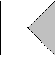
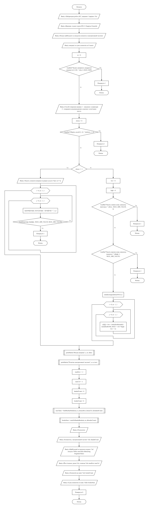
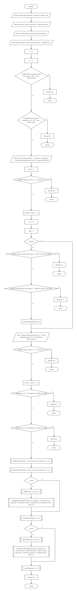
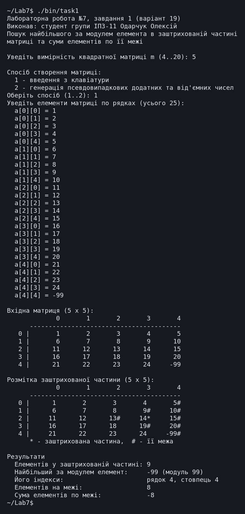
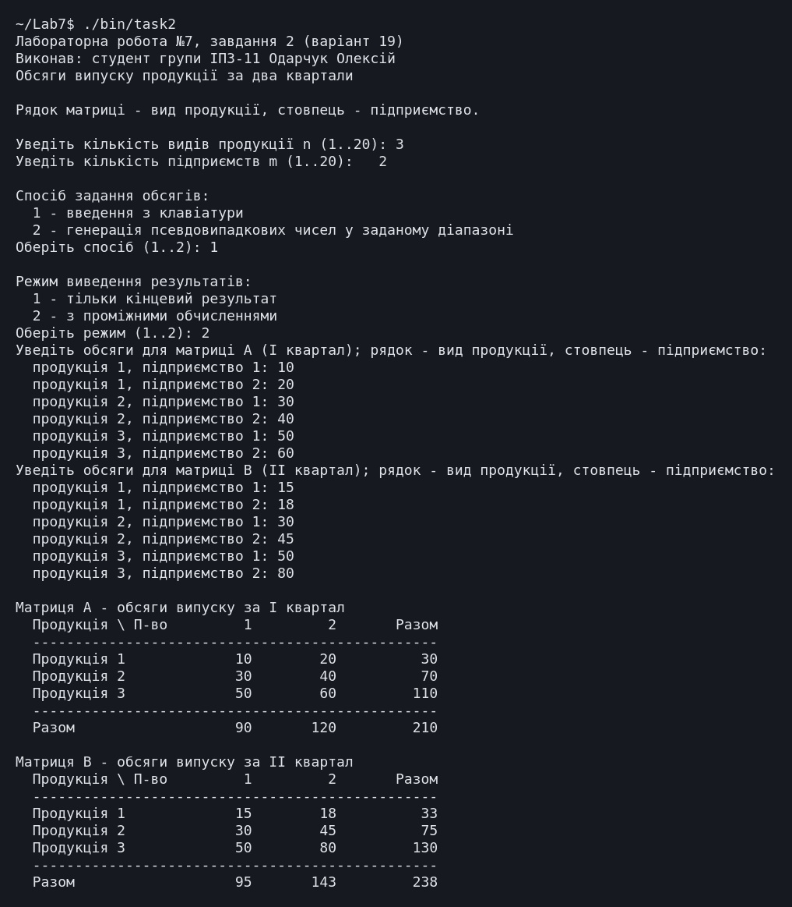
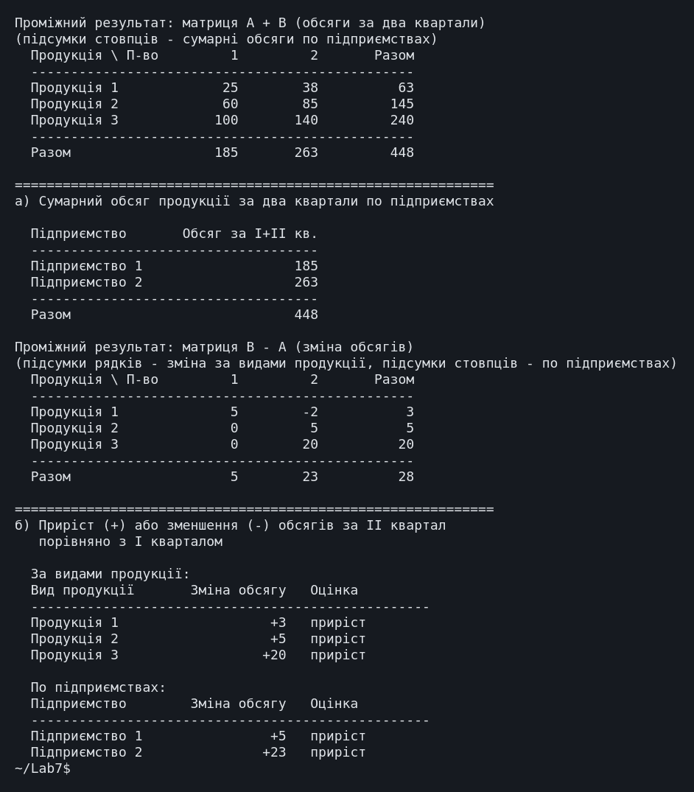
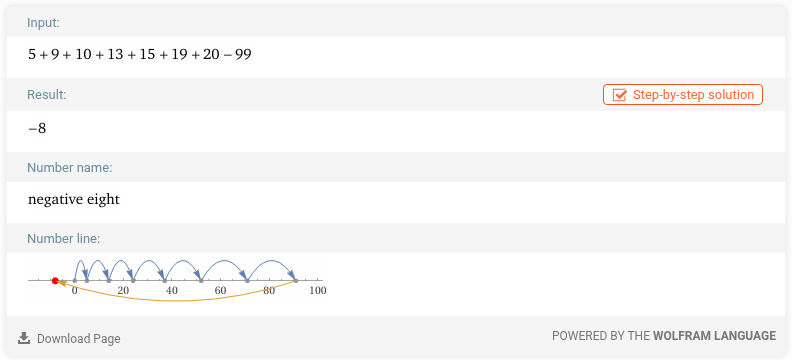

← До переліку лабораторних робіт
Лабораторна робота №7. Багатовимірні масиви
Варіант 19. Виконав: Одарчук Олексій, КНУ імені Тараса Шевченка, ФІТ, група ІПЗ-11. C17, gcc
1. Мета роботи
- Ознайомитися з особливостями багатовимірних масивів та їх подання в оперативній пам'яті.
- Опанувати технологію доступу до елементів матриці за двома індексами.
- Навчитися розробляти алгоритми та програми із застосуванням типових операцій і матричної алгебри.
2. Умова задачі
Завдання 1 (19.1) - базові операції обробки матриць
Створити матрицю, вимірність m > 3 якої ввести з клавіатури. Передбачити меню вибору способу створення матриці: введення з клавіатури або генерація псевдовипадкових додатних та від'ємних чисел. Визначити найбільший за модулем елемент та його індекси серед елементів, що розташовані в заштрихованій частині малюнку. Підрахувати суму елементів по межі заштрихованої частини матриці. Вивести на екран вхідну матрицю, значення шуканого елемента та його індекси, шукану суму елементів. Матриці виводити у табличному вигляді.

Завдання 2 (19.2) - алгоритми матричної алгебри
Нехай n підприємств випускають m видів продукції. Матриця A = (aij) задає обсяги i-ої продукції на j-му підприємстві в першому кварталі, а матриця B = (bij) - у другому кварталі. Знайти: а) сумарний обсяг продукції за два квартали по двох підприємствах; б) приріст або зменшення обсягів продукції за другий квартал порівняно з першим за видами продукції та по підприємствах. Вимірності матриць ввести з клавіатури, значення елементів матриць генерувати або вводити з клавіатури на вимогу користувача. Вивести результати за пунктами а) та б) з відповідними повідомленнями.
Вимоги до обох завдань: передбачити вибір способу створення матриць - введення з клавіатури або заповнення псевдовипадковими числами; для завдання 2 також передбачити вибір режиму виведення результатів: або тільки кінцевий результат, або з проміжними ітераціями.
Обмеження умови: забороняється використовувати STL, шаблон
std::vector, ітератори, контейнери, бібліотеки для роботи з матрицями. Крім
того, методичні вказівки зазначають: "Застосування покажчиків, динамічних масивів,
операторів new, delete в лабораторній роботі №7 НЕДОЦІЛЬНО і НЕ
СХВАЛЮЄТЬСЯ".
3. Аналіз задачі та теоретичне обґрунтування
Завдання 1. Опис заштрихованої частини в термінах індексів
На рисунку заштриховано трикутник з вершиною в центрі квадрата й основою на правій стороні; його сторони - відрізки обох діагоналей.
Головна діагональ задається рівнянням i = j, побічна -
i + j = m - 1. Праворуч від них лежать елементи з j > i та
j > m - 1 - i, тому сектор описується системою:
j ≥ i (на головній діагоналі або праворуч від неї) j ≥ m - 1 - i (на побічній діагоналі або праворуч від неї)
Нерівності нестрогі, бо сторони трикутника на рисунку суцільні. Для m = 5 сектор має вигляд:
. . . . * . . . * * . . * * * . . . * * . . . . *
Межа заштрихованої частини - її контур: відрізки діагоналей (i = j,
i + j = m - 1) і права сторона (j = m - 1) в межах сектора. При
m = 4 усі шість елементів сектора лежать на межі; при m = 5 всередині сектора є один
елемент, що до межі не входить, при m = 6 - два.
Програма виводить розмітку матриці: елементи сектора позначено *, елементи
межі - #, тож її можна звірити з рисунком.
Найбільший за модулем елемент шукається строгою нерівністю, тому з кількох елементів з однаковим модулем береться перший при обході рядками.
Завдання 2. Позначення
aij - обсяг i-ї продукції на j-му підприємстві, тож рядок матриці відповідає виду продукції, стовпець - підприємству; n - кількість видів продукції, m - кількість підприємств. Перше речення умови позначає n підприємств і m видів продукції, проте наступне речення задає aij як обсяг i-ї продукції на j-му підприємстві: за такої індексації рядком матриці є вид продукції. У програмі взято позначення, узгоджене з індексацією матриці.
Заголовки таблиць підписано словами ("Продукція 1", "Підприємство 2").
Сумарний обсяг обчислюється для кожного з m підприємств; випадок двох підприємств з пункту а) розглянуто в контрольному прикладі.
Завдання 2. Розрахункові формули
а) Сумарний обсяг за два квартали по кожному підприємству - сума по стовпцю обох матриць:
n-1
S(j) = Σ ( a[i][j] + b[i][j] ), j = 0 ... m-1
i=0
б) Приріст (зменшення) за другий квартал - сума різниць. За видами продукції це сума по рядку, по підприємствах - сума по стовпцю:
m-1 n-1
Δпродукція(i) = Σ ( b[i][j] - a[i][j] ) Δп-во(j) = Σ ( b[i][j] - a[i][j] )
j=0 i=0
Знак результату визначає характер зміни: додатне значення - приріст, від'ємне - зменшення, нуль - без змін; програма виводить і число, і словесну оцінку.
Накопичувані суми мають тип long long із запасом: найбільший можливий
підсумок 20·20·2·10⁶ = 8·10⁸ ще вміщується в int, але лише втричі менший за
його межу.
Завдання 2. Режим виведення результатів
У режимі з проміжними обчисленнями програма додатково виводить матриці A + B і B - A
(функції addMatrices() і subtractMatrices()): підсумки стовпців
A + B дають відповідь на пункт а), підсумки рядків і стовпців B - A - на пункт б).
Розміщення матриць у пам'яті
Динамічна пам'ять, як вимагають методичні вказівки, не застосовується: матриці оголошено
масивами сталого розміру (int a[MAX_SIZE][MAX_SIZE] у завданні 1,
int a[MAX_ROWS][MAX_COLS] у завданні 2), а фактична вимірність вводиться з
клавіатури.
Вирівнювання таблиць
Специфікатор %-16s рахує байти, а кирилична літера в UTF-8 займає два байти,
тому для вирівнювання таблиць написано функцію printPadded(), що рахує ширину
в символах.
Література: Ковалюк Т.В. Алгоритмізація та програмування. - Львів.: "Магнолія 2006", 2024. - 400 с.; Deitel P., Deitel H. C++ How to Program. Pearson Education, Inc. Hoboken, New Jersey. 2017. - 3015 p.
4. Блок-схема алгоритму


Схеми побудовано з текстів програм за допомогою rombik (rombik.app) відповідно до ДСТУ 19.701-90 (ISO 5807).
5. Текст програми
Завдання 1 - task1.c
/*==============================================================================
Лабораторна робота №7. Завдання 1. Варіант 19.
Тема: багатовимірні масиви, базові операції обробки матриць.
Умова (таблиця 7.1, завдання 19.1): створити матрицю, вимірність m > 3 якої
ввести з клавіатури. Передбачити меню вибору способу створення матриці:
введення з клавіатури або генерація псевдовипадкових додатних та від'ємних
чисел. Визначити найбільший за модулем елемент та його індекси серед
елементів, що розташовані в заштрихованій частині малюнку. Підрахувати суму
елементів по межі заштрихованої частини матриці. Вивести на екран вхідну
матрицю, значення шуканого елемента та його індекси, шукану суму елементів.
Матриці виводити у табличному вигляді.
ОПИС ЗАШТРИХОВАНОЇ ЧАСТИНИ (рисунок до варіанта 19).
На рисунку заштриховано трикутник, вершина якого збігається з центром
квадрата, а основою є права сторона. Сторонами трикутника є відрізки
обох діагоналей квадрата. У термінах індексів квадратної матриці m x m
це "східний" сектор, утворений двома діагоналями:
j >= i (на головній діагоналі або праворуч від неї)
j >= m-1-i (на побічній діагоналі або праворуч від неї)
Приклад для m = 5 (позначено * - елементи заштрихованої частини):
. . . . *
. . . * *
. . * * *
. . . * *
. . . . *
МЕЖА ЗАШТРИХОВАНОЇ ЧАСТИНИ - це її контур: відрізки обох діагоналей
(i == j та i + j == m-1) і права сторона квадрата (j == m-1).
ОБМЕЖЕННЯ УМОВИ: забороняється використовувати STL, std::vector, ітератори,
контейнери, бібліотеки для роботи з матрицями.
Виконав: Одарчук Олексій, КНУ імені Тараса Шевченка, ФІТ, група ІПЗ-11.
Компілятор: gcc -std=c17
==============================================================================*/
#include <stdio.h>
#include <stdbool.h>
#include <stdlib.h>
#include <time.h>
/* Найбільша припустима вимірність матриці. Межа масиву в мові C має бути сталим виразом часу компіляції,
а змінна з модифікатором const ним не є, тому розмір задано директивою
препроцесора. */
#define MAX_SIZE 20
/* Найбільше за модулем значення елемента. */
const int MAX_ABS_VALUE = 1000000;
/*------------------------------------------------------------------------------
skipLine - відкинути залишок рядка введення разом із символом '\n'.
------------------------------------------------------------------------------*/
void skipLine(void)
{
int c = getchar();
while (c != '\n' && c != EOF)
{
c = getchar();
}
}
/*------------------------------------------------------------------------------
readInt - прочитати ціле число із заданого діапазону з контролем введення.
Параметри: prompt [вхідний], value [вихідний], low, high [вхідні].
Повертає : true - число прочитано; false - вхідні дані вичерпано.
------------------------------------------------------------------------------*/
bool readInt(const char *prompt, int *value, int low, int high)
{
for (;;)
{
printf("%s", prompt);
const int scanned = scanf("%d", value);
if (scanned == EOF)
{
return false;
}
skipLine();
if (scanned == 1 && *value >= low && *value <= high)
{
return true;
}
printf("Помилка: потрібне ціле число від %d до %d.\n", low, high);
}
}
/*------------------------------------------------------------------------------
inShadedPart - чи належить елемент заштрихованій частині матриці.
Параметри:
i, j [вхідні] - індекси рядка та стовпця елемента;
m [вхідний] - вимірність квадратної матриці.
Повертає : true - елемент належить "східному" сектору між діагоналями.
------------------------------------------------------------------------------*/
bool inShadedPart(int i, int j, int m)
{
return j >= i && j >= m - 1 - i;
}
/*------------------------------------------------------------------------------
onShadedBorder - чи лежить елемент на межі заштрихованої частини.
Межу утворюють відрізки головної діагоналі (i == j), побічної діагоналі
(i + j == m-1) та права сторона матриці (j == m-1) - але лише ті їх точки,
що належать самому сектору.
Параметри:
i, j [вхідні] - індекси елемента;
m [вхідний] - вимірність матриці.
Повертає : true - елемент лежить на межі заштрихованої частини.
------------------------------------------------------------------------------*/
bool onShadedBorder(int i, int j, int m)
{
if (!inShadedPart(i, j, m))
{
return false;
}
return i == j || i + j == m - 1 || j == m - 1;
}
/*------------------------------------------------------------------------------
printMatrix - вивести матрицю у табличному вигляді з нумерацією
рядків і стовпців.
Параметри:
title [вхідний] - заголовок таблиці;
a [вхідний] - матриця;
m [вхідний] - вимірність матриці;
mark [вхідний] - якщо true, елементи заштрихованої частини позначаються
символом '*', а елементи її межі - символом '#'.
Параметр-матрицю оголошено без const: у C до редакції C23 масив
int a[N][M] неявно не перетворюється на const int (*)[M].
------------------------------------------------------------------------------*/
void printMatrix(const char *title, int a[][MAX_SIZE], int m, bool mark)
{
printf("\n%s (%d x %d):\n", title, m, m);
printf(" ");
for (int j = 0; j < m; ++j)
{
printf("%8d", j);
}
printf("\n");
printf(" ");
for (int j = 0; j < m; ++j)
{
printf("--------");
}
printf("\n");
for (int i = 0; i < m; ++i)
{
printf("%4d |", i);
for (int j = 0; j < m; ++j)
{
if (mark)
{
char flag = ' ';
if (onShadedBorder(i, j, m))
{
flag = '#';
}
else if (inShadedPart(i, j, m))
{
flag = '*';
}
printf("%7d%c", a[i][j], flag);
}
else
{
printf("%8d", a[i][j]);
}
}
printf("\n");
}
if (mark)
{
printf(" * - заштрихована частина, # - її межа\n");
}
}
/*------------------------------------------------------------------------------
findMaxByModulus - знайти найбільший за модулем елемент заштрихованої частини.
Параметри:
a [вхідний] - матриця;
m [вхідний] - вимірність матриці;
row [вихідний] - адреса змінної для індексу рядка знайденого елемента;
col [вихідний] - адреса змінної для індексу стовпця;
count [вихідний] - адреса лічильника елементів сектора.
Повертає : значення елемента з найбільшим модулем.
За наявності кількох елементів з однаковим модулем запам'ятовується перший
знайдений при обході рядками: порівняння виконується строгою нерівністю.
Локальні змінні:
maxAbs - найбільше знайдене абсолютне значення;
maxValue - сам елемент з найбільшим модулем.
------------------------------------------------------------------------------*/
int findMaxByModulus(int a[][MAX_SIZE], int m, int *row, int *col, int *count)
{
long long maxAbs = -1;
int maxValue = 0;
*row = -1;
*col = -1;
*count = 0;
for (int i = 0; i < m; ++i)
{
for (int j = 0; j < m; ++j)
{
if (!inShadedPart(i, j, m))
{
continue;
}
++(*count);
const long long absValue = llabs((long long)a[i][j]);
if (absValue > maxAbs)
{
maxAbs = absValue;
maxValue = a[i][j];
*row = i;
*col = j;
}
}
}
return maxValue;
}
/*------------------------------------------------------------------------------
sumOnShadedBorder - сума елементів по межі заштрихованої частини матриці.
Параметри:
a [вхідний] - матриця;
m [вхідний] - вимірність матриці;
count [вихідний] - адреса лічильника елементів межі.
Повертає : суму елементів межі.
------------------------------------------------------------------------------*/
long long sumOnShadedBorder(int a[][MAX_SIZE], int m, int *count)
{
long long sum = 0;
*count = 0;
for (int i = 0; i < m; ++i)
{
for (int j = 0; j < m; ++j)
{
if (onShadedBorder(i, j, m))
{
sum += a[i][j];
++(*count);
}
}
}
return sum;
}
/*------------------------------------------------------------------------------
Головна функція. Створює матрицю, знаходить найбільший за модулем елемент
заштрихованої частини та суму елементів по її межі.
Локальні змінні:
a - оброблювана матриця;
m - вимірність матриці;
choice - спосіб створення матриці;
low, high - межі діапазону для генерації;
maxValue - елемент з найбільшим модулем;
maxRow, maxCol - індекси знайденого елемента;
borderSum - сума елементів по межі заштрихованої частини;
shadedCount, borderCount - кількості елементів сектора та його межі.
------------------------------------------------------------------------------*/
int main(void)
{
printf("Лабораторна робота №7, завдання 1 (варіант 19)\n");
printf("Виконав: студент групи ІПЗ-11 Одарчук Олексій\n");
printf("Пошук найбільшого за модулем елемента в заштрихованій частині\n");
printf("матриці та суми елементів по її межі\n\n");
int m = 0;
if (!readInt("Уведіть вимірність квадратної матриці m (4..20): ", &m, 4, MAX_SIZE))
{
return 1;
}
int a[MAX_SIZE][MAX_SIZE];
printf("\nСпосіб створення матриці:\n"
" 1 - введення з клавіатури\n"
" 2 - генерація псевдовипадкових додатних та від'ємних чисел\n");
int choice = 0;
if (!readInt("Оберіть спосіб (1..2): ", &choice, 1, 2))
{
return 1;
}
if (choice == 1)
{
printf("Уведіть елементи матриці по рядках (усього %d):\n", m * m);
for (int i = 0; i < m; ++i)
{
for (int j = 0; j < m; ++j)
{
char prompt[40];
snprintf(prompt, sizeof prompt, " a[%d][%d] = ", i, j);
if (!readInt(prompt, &a[i][j], -MAX_ABS_VALUE, MAX_ABS_VALUE))
{
return 1;
}
}
}
}
else
{
int low = 0;
int high = 0;
if (!readInt("Уведіть нижню межу діапазону (від'ємну): ", &low, -MAX_ABS_VALUE,
0))
{
return 1;
}
if (!readInt("Уведіть верхню межу діапазону (додатну): ", &high, 1,
MAX_ABS_VALUE))
{
return 1;
}
srand((unsigned)time(NULL));
/* Масштабування rand() на діапазон замість rand() % range: стандарт гарантує
лише RAND_MAX >= 32767, і для ширшого діапазону остача не охопила б
усіх значень. */
for (int i = 0; i < m; ++i)
{
for (int j = 0; j < m; ++j)
{
a[i][j] = low + (int)((double)rand() / ((double)RAND_MAX + 1.0) *
(high - low + 1));
}
}
}
printMatrix("Вхідна матриця", a, m, false);
printMatrix("Розмітка заштрихованої частини", a, m, true);
int maxRow = -1;
int maxCol = -1;
int shadedCount = 0;
int borderCount = 0;
const int maxValue = findMaxByModulus(a, m, &maxRow, &maxCol, &shadedCount);
const long long borderSum = sumOnShadedBorder(a, m, &borderCount);
printf("\nРезультати\n");
printf(" Елементів у заштрихованій частині: %d\n", shadedCount);
printf(" Найбільший за модулем елемент: %d (модуль %lld)\n", maxValue,
llabs((long long)maxValue));
printf(" Його індекси: рядок %d, стовпець %d\n", maxRow,
maxCol);
printf(" Елементів на межі: %d\n", borderCount);
printf(" Сума елементів по межі: %lld\n", borderSum);
return 0;
}
Завдання 2 - task2.c
/*==============================================================================
Лабораторна робота №7. Завдання 2. Варіант 19.
Тема: алгоритми матричної алгебри.
Умова (таблиця 7.1, завдання 19.2): нехай n підприємств випускають m видів
продукції. Матриця A = (a[i][j]), i = 1..n, j = 1..m задає обсяги i-ої
продукції на j-му підприємстві в першому кварталі, а матриця
B = (b[i][j]) - у другому кварталі. Знайти:
а) сумарний обсяг продукції за два квартали по двох підприємствах;
б) приріст або зменшення обсягів продукції за другий квартал порівняно
з першим за видами продукції та по підприємствах.
Вимірності матриць увести з клавіатури, значення елементів матриць
генерувати або вводити з клавіатури на вимогу користувача. Вивести
результати за пунктами а) та б) з відповідними повідомленнями.
Вимога до завдання 2: передбачити вибір режиму виведення результатів -
або тільки кінцевий результат, або з проміжними обчисленнями. Проміжними
результатами є матриця сумарних обсягів A + B і матриця змін B - A:
підсумки їх стовпців і рядків дають відповіді на пункти а) та б).
Позначення: a[i][j] - обсяг i-ї продукції на j-му підприємстві, тож рядок
матриці відповідає виду продукції, стовпець - підприємству; n - кількість
видів продукції, m - кількість підприємств.
ОБМЕЖЕННЯ УМОВИ: забороняється використовувати STL, std::vector, ітератори,
контейнери, бібліотеки для роботи з матрицями.
Виконав: Одарчук Олексій, КНУ імені Тараса Шевченка, ФІТ, група ІПЗ-11.
Компілятор: gcc -std=c17
==============================================================================*/
#include <stdio.h>
#include <stdbool.h>
#include <stdlib.h>
#include <time.h>
/* Найбільші припустимі вимірності матриць. Межа масиву в мові C має бути сталим виразом часу компіляції,
а змінна з модифікатором const ним не є, тому розмір задано директивою
препроцесора. */
#define MAX_ROWS 20 /* видів продукції */
#define MAX_COLS 20 /* підприємств */
/* Найбільший обсяг випуску одного виду продукції на підприємстві. */
const int MAX_VOLUME = 1000000;
/*------------------------------------------------------------------------------
utf8Width - ширина рядка в символах, а не в байтах.
У кодуванні UTF-8 кирилична літера займає два байти, тому специфікатор
формату виду %-16s, який рахує байти, вирівнює заголовки таблиць
неправильно. Функція рахує лише початкові байти символів: у продовжувальних
байтах старші біти дорівнюють 10 у двійковій системі.
Параметри: s [вхідний] - рядок у кодуванні UTF-8.
Повертає : кількість символів рядка.
------------------------------------------------------------------------------*/
int utf8Width(const char *s)
{
int width = 0;
for (const unsigned char *p = (const unsigned char *)s; *p != '\0'; ++p)
{
/* Продовжувальний байт UTF-8 має вигляд 10xxxxxx: маска 0xC0 лишає
два старші біти, і якщо вони не дорівнюють 10, це початок символу. */
if ((*p & 0xC0) != 0x80)
{
++width;
}
}
return width;
}
/*------------------------------------------------------------------------------
printPadded - вивести рядок, доповнивши його пропусками до заданої ширини.
Параметри:
s [вхідний] - рядок, що виводиться;
width [вхідний] - потрібна ширина поля в символах;
left [вхідний] - true: вирівнювання ліворуч; false: праворуч.
Локальні змінні:
pad - кількість пропусків, які треба додати.
------------------------------------------------------------------------------*/
void printPadded(const char *s, int width, bool left)
{
const int pad = width - utf8Width(s);
if (!left)
{
for (int i = 0; i < pad; ++i)
{
putchar(' ');
}
}
printf("%s", s);
if (left)
{
for (int i = 0; i < pad; ++i)
{
putchar(' ');
}
}
}
/*------------------------------------------------------------------------------
skipLine - відкинути залишок рядка введення разом із символом '\n'.
------------------------------------------------------------------------------*/
void skipLine(void)
{
int c = getchar();
while (c != '\n' && c != EOF)
{
c = getchar();
}
}
/*------------------------------------------------------------------------------
readInt - прочитати ціле число із заданого діапазону з контролем введення.
Параметри: prompt [вхідний], value [вихідний], low, high [вхідні].
Повертає : true - число прочитано; false - вхідні дані вичерпано.
------------------------------------------------------------------------------*/
bool readInt(const char *prompt, int *value, int low, int high)
{
for (;;)
{
printf("%s", prompt);
const int scanned = scanf("%d", value);
if (scanned == EOF)
{
return false;
}
skipLine();
if (scanned == 1 && *value >= low && *value <= high)
{
return true;
}
printf("Помилка: потрібне ціле число від %d до %d.\n", low, high);
}
}
/*------------------------------------------------------------------------------
fillMatrix - заповнити матрицю обсягів продукції.
Параметри:
a [вихідний] - матриця, що заповнюється;
n [вхідний] - кількість рядків (видів продукції);
m [вхідний] - кількість стовпців (підприємств);
name [вхідний] - назва матриці для запрошень;
byHand [вхідний] - true: введення з клавіатури; false: генерація;
low, high [вхідні] - межі діапазону для генерації.
Повертає : true - заповнено; false - вхідні дані вичерпано.
------------------------------------------------------------------------------*/
bool fillMatrix(int a[][MAX_COLS], int n, int m, const char *name, bool byHand, int low,
int high)
{
if (byHand)
{
printf("Уведіть обсяги для матриці %s; рядок - вид продукції, "
"стовпець - підприємство:\n",
name);
for (int i = 0; i < n; ++i)
{
for (int j = 0; j < m; ++j)
{
char prompt[80];
snprintf(prompt, sizeof prompt,
" продукція %d, підприємство %d: ", i + 1, j + 1);
if (!readInt(prompt, &a[i][j], 0, MAX_VOLUME))
{
return false;
}
}
}
}
else
{
/* Масштабування rand() на діапазон замість rand() % range: стандарт гарантує
лише RAND_MAX >= 32767, і для ширшого діапазону остача не охопила б
усіх значень. */
for (int i = 0; i < n; ++i)
{
for (int j = 0; j < m; ++j)
{
a[i][j] = low + (int)((double)rand() / ((double)RAND_MAX + 1.0) *
(high - low + 1));
}
}
}
return true;
}
/*------------------------------------------------------------------------------
printSeparator - вивести розділювальну лінію таблиці.
Параметри: width [вхідний] - довжина лінії в символах.
------------------------------------------------------------------------------*/
void printSeparator(int width)
{
printf(" ");
for (int i = 0; i < width; ++i)
{
putchar('-');
}
printf("\n");
}
/*------------------------------------------------------------------------------
printMatrix - вивести матрицю обсягів у табличному вигляді із заголовками
рядків (види продукції) та стовпців (підприємства).
Праворуч виводяться підсумки рядків, унизу - підсумки стовпців.
Параметри:
title [вхідний] - заголовок таблиці;
a [вхідний] - матриця;
n, m [вхідні] - кількість рядків і стовпців.
Параметр-матрицю оголошено без const: у C до редакції C23 масив
int a[N][M] неявно не перетворюється на const int (*)[M].
------------------------------------------------------------------------------*/
void printMatrix(const char *title, int a[][MAX_COLS], int n, int m)
{
printf("\n%s\n", title);
printf(" ");
printPadded("Продукція \\ П-во", 16, true);
for (int j = 0; j < m; ++j)
{
printf("%10d", j + 1);
}
printPadded("Разом", 12, false);
printf("\n");
printSeparator(16 + 10 * m + 12);
for (int i = 0; i < n; ++i)
{
printf(" Продукція %-6d", i + 1);
long long rowTotal = 0;
for (int j = 0; j < m; ++j)
{
printf("%10d", a[i][j]);
rowTotal += a[i][j];
}
printf("%12lld\n", rowTotal);
}
printSeparator(16 + 10 * m + 12);
printf(" ");
printPadded("Разом", 16, true);
long long grandTotal = 0;
for (int j = 0; j < m; ++j)
{
long long columnTotal = 0;
for (int i = 0; i < n; ++i)
{
columnTotal += a[i][j];
}
printf("%10lld", columnTotal);
grandTotal += columnTotal;
}
printf("%12lld\n", grandTotal);
}
/*------------------------------------------------------------------------------
addMatrices - поелементна сума двох матриць: c[i][j] = a[i][j] + b[i][j].
Параметри:
a, b [вхідні] - доданки;
c [вихідний] - результат;
n, m [вхідні] - кількість рядків і стовпців.
------------------------------------------------------------------------------*/
void addMatrices(int a[][MAX_COLS], int b[][MAX_COLS], int c[][MAX_COLS], int n, int m)
{
for (int i = 0; i < n; ++i)
{
for (int j = 0; j < m; ++j)
{
c[i][j] = a[i][j] + b[i][j];
}
}
}
/*------------------------------------------------------------------------------
subtractMatrices - поелементна різниця двох матриць: c[i][j] = a[i][j] - b[i][j].
Параметри:
a [вхідний] - зменшуване;
b [вхідний] - від'ємник;
c [вихідний] - результат;
n, m [вхідні] - кількість рядків і стовпців.
------------------------------------------------------------------------------*/
void subtractMatrices(int a[][MAX_COLS], int b[][MAX_COLS], int c[][MAX_COLS], int n,
int m)
{
for (int i = 0; i < n; ++i)
{
for (int j = 0; j < m; ++j)
{
c[i][j] = a[i][j] - b[i][j];
}
}
}
/*------------------------------------------------------------------------------
reportTotalsByPlant - пункт а) умови: сумарний обсяг продукції за два квартали
по кожному підприємству.
Параметри:
a, b [вхідні] - обсяги випуску за I та II квартали;
n [вхідний] - кількість видів продукції (рядків);
m [вхідний] - кількість підприємств (стовпців).
Локальні змінні:
totalByPlant - сумарний обсяг по кожному підприємству;
grandTotal - підсумок по всіх підприємствах.
------------------------------------------------------------------------------*/
void reportTotalsByPlant(int a[][MAX_COLS], int b[][MAX_COLS], int n, int m)
{
long long totalByPlant[MAX_COLS];
long long grandTotal = 0;
for (int j = 0; j < m; ++j)
{
totalByPlant[j] = 0;
for (int i = 0; i < n; ++i)
{
totalByPlant[j] += (long long)a[i][j] + b[i][j];
}
grandTotal += totalByPlant[j];
}
printf("\n============================================================\n");
printf("а) Сумарний обсяг продукції за два квартали по підприємствах\n\n");
printf(" ");
printPadded("Підприємство", 18, true);
printPadded("Обсяг за I+II кв.", 18, false);
printf("\n ------------------------------------\n");
for (int j = 0; j < m; ++j)
{
printf(" Підприємство %-5d%18lld\n", j + 1, totalByPlant[j]);
}
printf(" ------------------------------------\n ");
printPadded("Разом", 18, true);
printf("%18lld\n", grandTotal);
}
/*------------------------------------------------------------------------------
reportChanges - пункт б) умови: приріст або зменшення обсягів за другий
квартал порівняно з першим, за видами продукції та по
підприємствах.
Параметри:
a, b [вхідні] - обсяги випуску за I та II квартали;
n, m [вхідні] - кількість видів продукції та підприємств.
Локальні змінні:
deltaByProduct - зміна обсягу за кожним видом продукції;
deltaByPlant - зміна обсягу по кожному підприємству.
------------------------------------------------------------------------------*/
void reportChanges(int a[][MAX_COLS], int b[][MAX_COLS], int n, int m)
{
long long deltaByProduct[MAX_ROWS];
long long deltaByPlant[MAX_COLS];
for (int i = 0; i < n; ++i)
{
deltaByProduct[i] = 0;
for (int j = 0; j < m; ++j)
{
deltaByProduct[i] += (long long)b[i][j] - a[i][j];
}
}
for (int j = 0; j < m; ++j)
{
deltaByPlant[j] = 0;
for (int i = 0; i < n; ++i)
{
deltaByPlant[j] += (long long)b[i][j] - a[i][j];
}
}
printf("\n============================================================\n");
printf("б) Приріст (+) або зменшення (-) обсягів за II квартал\n");
printf(" порівняно з I кварталом\n");
printf("\n За видами продукції:\n ");
printPadded("Вид продукції", 18, true);
printPadded("Зміна обсягу", 14, false);
printf(" Оцінка\n");
printf(" --------------------------------------------------\n");
for (int i = 0; i < n; ++i)
{
printf(" Продукція %-8d%+14lld %s\n", i + 1, deltaByProduct[i],
deltaByProduct[i] > 0 ? "приріст"
: deltaByProduct[i] < 0 ? "зменшення"
: "без змін");
}
printf("\n По підприємствах:\n ");
printPadded("Підприємство", 18, true);
printPadded("Зміна обсягу", 14, false);
printf(" Оцінка\n");
printf(" --------------------------------------------------\n");
for (int j = 0; j < m; ++j)
{
printf(" Підприємство %-5d%+14lld %s\n", j + 1, deltaByPlant[j],
deltaByPlant[j] > 0 ? "приріст"
: deltaByPlant[j] < 0 ? "зменшення"
: "без змін");
}
}
/*------------------------------------------------------------------------------
Головна функція. Читає обидві матриці обсягів, обчислює сумарні обсяги
за два квартали та приріст/зменшення за другий квартал.
Локальні змінні:
a, b - обсяги продукції за перший та другий квартали;
sum, diff - проміжні матриці A + B та B - A;
n, m - кількість видів продукції та підприємств;
byHand - спосіб задання елементів матриць;
low, high - межі діапазону для генерації;
verbose - режим виведення: true - з проміжними обчисленнями.
------------------------------------------------------------------------------*/
int main(void)
{
printf("Лабораторна робота №7, завдання 2 (варіант 19)\n");
printf("Виконав: студент групи ІПЗ-11 Одарчук Олексій\n");
printf("Обсяги випуску продукції за два квартали\n\n");
printf("Рядок матриці - вид продукції, стовпець - підприємство.\n\n");
int n = 0;
int m = 0;
if (!readInt("Уведіть кількість видів продукції n (1..20): ", &n, 1, MAX_ROWS))
{
return 1;
}
if (!readInt("Уведіть кількість підприємств m (1..20): ", &m, 1, MAX_COLS))
{
return 1;
}
printf("\nСпосіб задання обсягів:\n"
" 1 - введення з клавіатури\n"
" 2 - генерація псевдовипадкових чисел у заданому діапазоні\n");
int choice = 0;
if (!readInt("Оберіть спосіб (1..2): ", &choice, 1, 2))
{
return 1;
}
const bool byHand = (choice == 1);
int low = 0;
int high = 0;
if (!byHand)
{
if (!readInt("Уведіть нижню межу обсягу: ", &low, 0, MAX_VOLUME))
{
return 1;
}
if (!readInt("Уведіть верхню межу обсягу: ", &high, low, MAX_VOLUME))
{
return 1;
}
srand((unsigned)time(NULL));
}
printf("\nРежим виведення результатів:\n"
" 1 - тільки кінцевий результат\n"
" 2 - з проміжними обчисленнями\n");
if (!readInt("Оберіть режим (1..2): ", &choice, 1, 2))
{
return 1;
}
const bool verbose = (choice == 2);
int a[MAX_ROWS][MAX_COLS];
int b[MAX_ROWS][MAX_COLS];
if (!fillMatrix(a, n, m, "A (I квартал)", byHand, low, high))
{
return 1;
}
if (!fillMatrix(b, n, m, "B (II квартал)", byHand, low, high))
{
return 1;
}
printMatrix("Матриця A - обсяги випуску за I квартал", a, n, m);
printMatrix("Матриця B - обсяги випуску за II квартал", b, n, m);
if (verbose)
{
int sum[MAX_ROWS][MAX_COLS];
addMatrices(a, b, sum, n, m);
printMatrix("Проміжний результат: матриця A + B (обсяги за два квартали)\n"
"(підсумки стовпців - сумарні обсяги по підприємствах)",
sum, n, m);
}
reportTotalsByPlant(a, b, n, m);
if (verbose)
{
int diff[MAX_ROWS][MAX_COLS];
subtractMatrices(b, a, diff, n, m);
printMatrix("Проміжний результат: матриця B - A (зміна обсягів)\n"
"(підсумки рядків - зміна за видами продукції, "
"підсумки стовпців - по підприємствах)",
diff, n, m);
}
reportChanges(a, b, n, m);
return 0;
}
6. Результати виконання роботи
Компіляція: make (gcc -std=c17, прапорці
-Wall -Wextra -pedantic -O2). Попереджень компілятора немає.
Нижче наведено екранні копії повних прогонів програм: кожна починається з запуску програми, містить усе введення з клавіатури й увесь вивід до завершення роботи. Прогін, що не вміщується на один екран, подано кількома послідовними частинами. Протоколи всіх прогонів, зокрема додаткових наборів вхідних даних, винесено окремими файлами за посиланнями.

Повний протокол виконання (task1.txt) (повний протокол, 161 рядків)


Повний протокол виконання (task2.txt) (повний протокол, 270 рядків)
7. Аналіз достовірності результатів
Достовірність результатів перевірено ручним обходом матриці за формулами сектора, ручним розрахунком сум і обчисленням на калькуляторі. Для кожної контрольної величини поруч із розрахунком наведено результат програми.
Перевірка розрахунків на калькуляторі
Нижче наведено екранні копії обчислень у калькуляторі WolframAlpha; поруч із кожною - результат програми.

Калькулятор: -8; програма: -8. Значення збігаються.
Завдання 1. Контрольний приклад m = 4
Матриця заповнена числами 1...16 по рядках. Заштрихована частина за виведеними формулами:
j=0 j=1 j=2 j=3
i=0 1 2 3 4*
i=1 5 6 7* 8*
i=2 9 10 11* 12*
i=3 13 14 15 16*
| Величина | Ручний розрахунок | Результат програми |
|---|---|---|
| Елементів у секторі | 4, 7, 8, 11, 12, 16 - 6 елементів | 6 |
| Найбільший за модулем | 16, індекси (3; 3) | 16, рядок 3, стовпець 3 |
| Елементів на межі | При m = 4 сектор завширшки не більше двох елементів, тому всі 6 його елементів лежать на межі | 6 |
| Сума по межі | 4 + 7 + 8 + 11 + 12 + 16 = 58 | 58 |
Завдання 1. Контрольний приклад m = 5
Матриця заповнена по рядках числами 1...24, а останній елемент дорівнює -99, щоб перевірити пошук саме за модулем, а не за значенням.
| Величина | Ручний розрахунок | Результат програми |
|---|---|---|
| Елементів у секторі | (0;4), (1;3), (1;4), (2;2), (2;3), (2;4), (3;3), (3;4), (4;4) - 9 елементів | 9 |
| Найбільший за модулем | серед 5, 9, 10, 13, 14, 15, 19, 20, -99 найбільший модуль має -99 | -99 (модуль 99), рядок 4, стовпець 4 |
| Елементів на межі | усі, крім внутрішнього елемента 14 у позиції (2;3) - 8 елементів | 8 |
| Сума по межі | 5 + 9 + 10 + 13 + 15 + 19 + 20 - 99 = -8 | -8 |
Від'ємний елемент -99 перевіряє, що порівняння виконується за модулем: за значенням програма повернула б 20.
Завдання 2. Контрольний приклад
Три види продукції, два підприємства. I квартал: A = [[10, 20], [30, 40], [50, 60]]; II квартал: B = [[15, 18], [30, 45], [50, 80]].
| Показник | Ручний розрахунок | Результат програми |
|---|---|---|
| Обсяг за два квартали, підприємство 1 | (10 + 30 + 50) + (15 + 30 + 50) = 90 + 95 = 185 | 185 |
| Обсяг за два квартали, підприємство 2 | (20 + 40 + 60) + (18 + 45 + 80) = 120 + 143 = 263 | 263 |
| Разом | 185 + 263 = 448 | 448 |
| Зміна за продукцією 1 | (15 - 10) + (18 - 20) = 5 - 2 = +3 | +3, приріст |
| Зміна за продукцією 2 | (30 - 30) + (45 - 40) = 0 + 5 = +5 | +5, приріст |
| Зміна за продукцією 3 | (50 - 50) + (80 - 60) = 0 + 20 = +20 | +20, приріст |
| Зміна по підприємству 1 | (15 - 10) + (30 - 30) + (50 - 50) = +5 | +5, приріст |
| Зміна по підприємству 2 | (18 - 20) + (45 - 40) + (80 - 60) = -2 + 5 + 20 = +23 | +23, приріст |
Сума змін за видами продукції (3 + 5 + 20 = 28) дорівнює сумі змін по підприємствах (5 + 23 = 28): це ті самі різниці, складені в іншому порядку.
У режимі з проміжними обчисленнями програма вивела матрицю A + B з підсумками стовпців 185 і 263 та матрицю B - A з підсумками рядків +3, +5, +20 і стовпців +5, +23 - ті самі значення, що й у таблицях пунктів а) і б).
Окремим запуском (режим "тільки кінцевий результат") перевірено зменшення обсягів і нульову різницю: програма виводить оцінки "зменшення" та "без змін".
8. Висновки
- Заштриховану частину матриці описано системою нерівностей через індекси; реалізовано пошук найбільшого за модулем елемента сектора та суму елементів по його межі.
- Реалізовано операції матричної алгебри: поелементні сума й різниця матриць, підсумовування по рядках і стовпцях.
- Реалізовано вибір режиму виведення: з проміжними обчисленнями програма виводить матриці A + B і B - A.
- Дотримано обмежень умови: STL і динамічна пам'ять не використовуються.
- Обидва завдання варіанта виконано в повному обсязі.